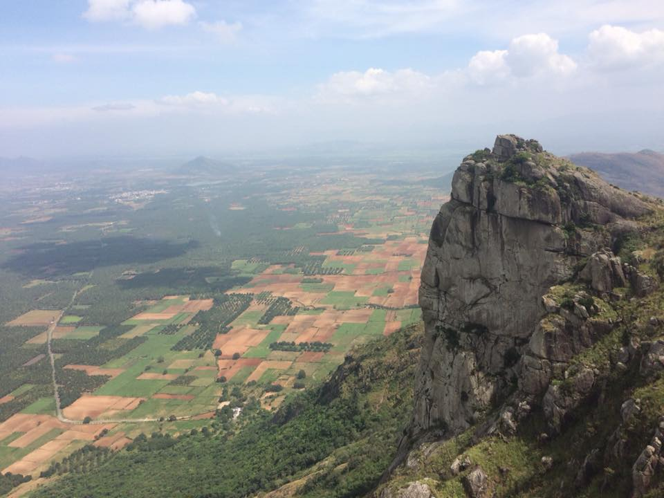
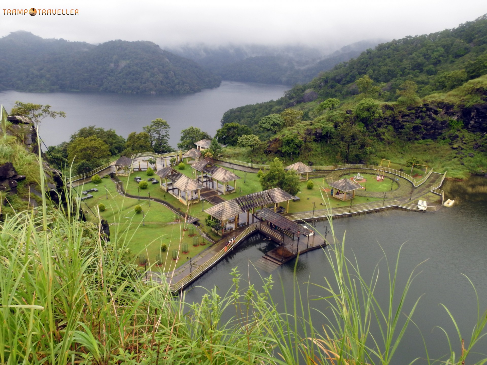
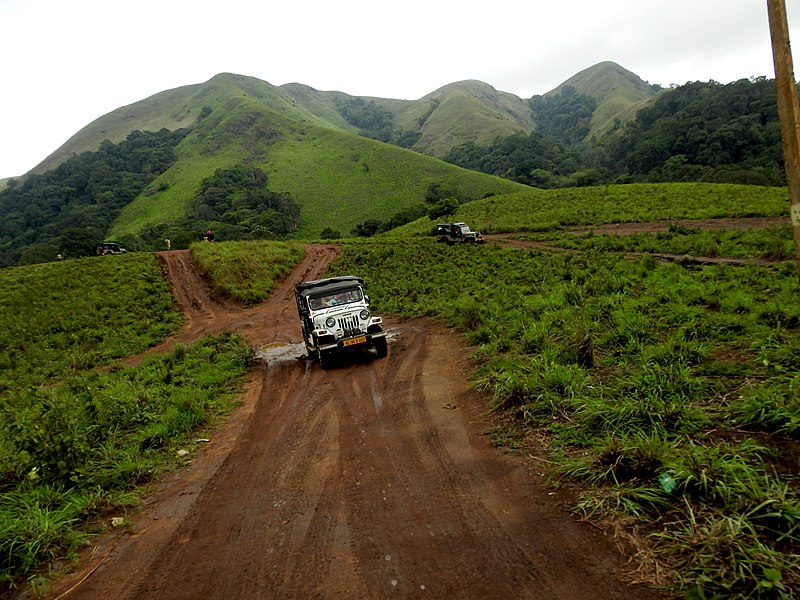
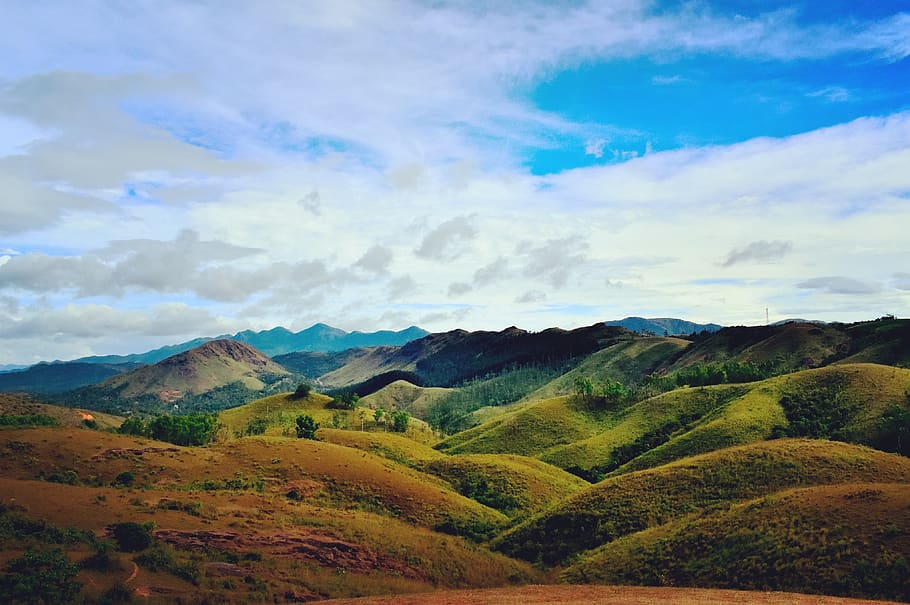

Idukki

Idukki, the landlocked district in eastern Kerala, is one of the most favoured tourist destinations in South India. A plethora of experiences awaits you in these unfathomed foothills of Western Ghats. Often called the spice garden of Kerala, Idukki is one of the greenest regions in the state. Let the cool mountain air fill-in your senses. Discover a new aroma in the boundless spice plantations. Behold the spellbinding view of purple-blue Neelakurinji flowers covering the Nilgiri every 12 years.
Top Spots
Amappara

Hill View Park

Thekkady

Vagamon

Amappara is that perfect offbeat getaway for thrill-seekers.The place got its name from the two gigantic rocks resting one above the other resembling a tortoise. 'Ama' in local parlance is a tortoise and 'para', a rock.
A much-favoured off-road destination, adrenaline junkies will be in their element here.The exhilarating ride to Amappara, as you wobble and bounce off the rocks is one to be experienced. If you are a motorhead with a four-wheel-drive, you can give it a try too.
There are plenty of viewpoints near Amappara which goes by different local names. There is one known as the 'flight viewpoint' which offers an awe-inspiring view of the villages in the valley.
Spread across 8 acres and surrounded by lush green vegetation, Hill View Park is the ideal location to admire the depth and resonance of one of the largest arch dams in all of Asia, the Idukki Dam. Open throughout the year, the park is neatly constructed on a hill at a height of about 350 ft. above the dam water level that offers a 360-degree view of the majestic Western Ghats.
Discover the inner child in you with a host of adventure activities such as Couple Zip Line, Burma Bridge, Sky Cycling, Bungee Trampoline, Gun Shooting and several adrenaline-pumping sports.
Pedal your way through the pristine Hill View Park Lake and let the tranquil breeze calm your mind. Unwind yourself munching on homemade chocolates from the cafe or sip freshly brewed coffee plucked from the mountains close by. Climb atop the watchtower situated at the topmost point in the park and enjoy the bird's eyes view of Idukki town, Cheruthoni Dam and Idukki Dam. Don't hesitate to wave your hands in the air and call out to the elephants that come to quench their thirst by the lake.
Beloved by sightseers and backpackers alike, Thekkady has something treasured in her for every traveller. Thekkady is part of the Periyar National Park, a protected Elephant and Tiger Reserve in Kerala. Named after Kerala's longest river, the Periyar park houses many endangered species including the Bengal Tiger.
If you are looking to experience nature up close, you can always trek into the unsullied trails in the hills. Guided treks of different magnitude are available; choose one in consonance with your physical fitness. You can always go the extra mile and opt-in the Periyar Tiger Trail. Accompanied by armed guards, experience the ethereal flora and fauna of the Western Ghats. If luck favours your side, you can even spot a Bengal Tiger.
A trip to Thekkady is never complete without the Spice plantation visit. Explore the variety of spice cultivations with a guided tour. You can also get handcrafted souvenirs and high-quality spices from the local market.
Vagamon is known for its scenic hillocks, locally known as 'Motta Kunnu', and majestic pine forests spread over hundreds of acres. Like many hill stations in the state, Vagamon was discovered by the Britishers during the 1920s when they were in search of suitable locations for their tea plantations.
Vagamon is one of the few places where you can do Tandem Paragliding in Kerala. Witnessing the grandeur of the Western Ghats from the skies is an unequalled experience altogether. Vagamon also hosts various international paragliding competitions and workshops. There are also places where you can experience activities like kayaking, zip-lining, rock climbing, archery and more.
Another important attraction in Vagamon is the Kurisumala Ashram, a Christian monastery established in 1958. Spent a day with the monks in the Ashram, enjoy the beauty of silence, stop by the dairy farm set up and maintained by the monks